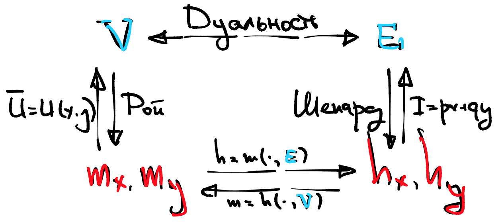

Семинар 3
Contents
Семинар 3¶
29 января 2022. Провела Даша 🐼
Задача 1.1: про эластичность по цене¶
Функция полезности агента имеет вид:
где \(z\) можно интерпретировать как деньги, которые остаются у потребителя после покупки благ \(x, y\) по ценам \(p, q >0\) соответственно. Доход агента равен \(I\). Для простоты предполагайте, что \(\beta, \gamma, (\beta^2-\gamma^2) > 0\) и \(p, q < \alpha\).
Запишите и решите оптимизационную задачу агента. Выпишите функции маршалианского спроса на блага \(x, y\) и деньги \(z\).
Запишите эластичность спроса на товар \(x\) по его цене \(p\). Имеет ли отдельно выписывать эластичность спроса на товар \(y\) по его цене \(q\)?
Определите, как эластичность спроса на товар \(x\) зависит от \(\alpha, \beta, \gamma\). Приведите экономическую интуицию, объясняющую эти зависимости, опираясь на вид функции полезности.
Запишите перекрестную эластичность спроса на товар \(x\) по цене товара \(y\) (\(q\)).
Определите, как перекрестная эластичность спроса на товар \(x\) по цене блага \(y\) зависит от параметров \(\alpha, \beta, \gamma\). Приведите экономическую интуицию, объясняющую эти зависимости, опираясь на вид функции полезности.
Задача 1.2: про эластичность по доходу¶
Функция полезности некоторого агента равна \(u(x, y)=\ln x +y\). Цена товаров \(x, y\) равна \(p, q\) соответственно. Доход равен \(I\).
Выпишете Маршалианскии функции спроса агента на товары \(x, y\).
Обратите внимание на то, как спросы зависят от \(I\). Приведите экономическую интуицию.
Запишите эластичности спросов по доходу. Как эластичность каждого спроса зависит от величины дохода, \(I\), и цен товаров, \(p\) и \(q\)?
Задача 1.3: введение в монополию и немного про рыночную власть (индекс Лернера)¶
Немножко теории
На лекции была затронута такая рыночная структура, как монополия. Во-первых, как вы уже знаете, это означает, что фирма обладает абсолютной рыночной властью и является единственной фирмой на рынке (μόνος «один» + πωλέω «продаю»). Еще прекрасно то, что фирма-монополист сама назначает цены на свои товары. Это значит, что при решении своей оптимизационной задачи монополист максимизирует прибыль при условии, что цена зависит от его решения.
Например, агенты потребляют только один товар, \(x\), который производит и продает монополист. Их спрос (совокупный, то есть отражает, сколько суммарно готовы приобрести агенты при каждой цене \(p\)) равен \(x=12-p\). Обратная функция спроса будет равна в таком случае \(p=12-x\).
Для производства \(x\) единиц продукции фирма затрачивает \(TC(x)=x^2\) денежных единиц. Прибылью фирмы мы называем то, сколько фирма получает в результате производства и продажи товара, иными словами, разницу между выручкой и издержками. Выручка, в свою очередь, представляет собой то, сколько фирма выручила, продавая свой товар. Так, фирма максимизирует следующую функцию прибыли при заданных выше функциях:
Прибыль фирмы, кстати, можно интерпретировать также как полезность фирмы, которую она получает, осуществляя производство и продажу своей продукции. Возвращаясь к решению задачи, мы сразу можем заметить, что функция прибыли имеет глобальный максимум (парабола с ветвями вниз), который достигается в точке \(x^*=3\). Цена будет равна \(9\).
Чтобы прочувствовать тот факт, что фирма полностью влияет на цену, можно записать функцию прибыли, выразив количество товара \(x\) через цену \(p\).
Предельными издержками называются траты, которые фирма несет при производстве дополнительной единицы продукции. Так, если фирма может произвести только целое количество единиц продукции, то её предельные издержки от производства дополнительной единицы продукции, \(x+1\)-ой, будут равны
Если приращение объемов производство может быть не только целым, а, например, равным 0.5, то предельные издержки при увеличении производства на \(\Delta >0\) будут равны
Если же фирма может производить абсолютно любое количество \(x\in \mathbb{R}_+\), то \(\Delta \to 0\) и вы получаете определение производной. Тогда предельные издержки производства \(x\)-ой единицы продукции будут равны:
А теперь можно перейти к решению задачи.
Пусть спрос на товар \(x\) описывается функцией \(x=24-p\), где \(p\) - цена товара \(x\). Фирма-монополист производит \(x\) единиц этого товара с издержками \(TC(x)=0.5x^2\) и максимизирует свою прибыль.
Выпишете функцию предельных издержек фирмы \(MC(x)\).
Выпишете функцию прибыли фирмы \(\pi(x)\). Найдите её максимум.
Найдите значение индекса Лернера \(L\).
Убедитесь, что значение, найденное в предыдущем пункте, действительно равно модулю обратной эластичности.
Задача 2.1: тождество Роя, лемма Шепарда и дуальность¶
Косвенная функция полезности ежа по имени Джордж равна
где \(p, q\) - цены благ \(x, y\) соответственно, а \(I\) - доход Джорджа.
Запишите функцию расходов Джорджа, \(e(p, q, u)\).
Сначала давайте пройдемся “против часовой стрелки” по картинке с лекции:
{kind=link}
Используя \(v(p, q, I)\) из условия и тождество Роя, выпишите функции Маршалианского спроса на товары \(x, y\) - \(m_x, m_y\) соответственно.
Используя найденные \(m_x, m_y\), выпишите функции Хиксианского спроса ежа на товары \(x, y\) - \(h_x, h_y\) соответственно.
А теперь пройдемся “по часовой стрелке” по картинке с лекции.
Используя найденную \(e(p, q, u)\) из пункта 0 и лемму Шепарда, выпишите функции Хиксианского спроса на товары \(x, y\) - \(h_x, h_y\) соответственно.
Используя найденные \(h_x, h_y\), выпишите функции Маршалианского спроса на товары \(x, y\) - \(m_x, m_y\) соответственно.
И, финально, выведите функцию полезности ежа, \(u(x, y)\).
Что же получится?
Задача 2.2: решение задачи минимизации расходов (вывод Хиксианских спросов)¶
В задаче 2.1 вы вывели функцию полезности \(u(x, y)\). Используя эту функцию, проделайте следующее:
Выпишите задачу минимизации расходов, \(px+qy\), с ограничением на значения функции полезности.
Решите задачу любым удобным вам способом (концерт по заявкам).
Убедитесь, что вы получили такой же ответ, как в задаче 2.2 (функции \(h_x, h_y\)).